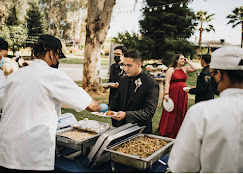

Outdoor tent celebrations
White tents, polished table settings, and a full-service team — we create memorable outdoor experiences from setup to the last plate cleared.
Fresno & San Jose · Full-Service Caterer
From backyard BBQ and tent celebrations to elegant indoor banquets — we bring great food, professional setup, and stress-free service to every event.
What We Do
Indoor or outdoor — we handle the food, setup, and details so you can enjoy your event.
Beautiful tent setups with full table service — perfect for weddings, reunions, and backyard celebrations across Fresno and the Bay Area.
Fresh-cooked mains and sides served from warming dishes — the kind of spread your guests will talk about long after the party ends.
Elegant plated dinners and banquet service for corporate events, milestones, and upscale gatherings in stunning indoor venues.
Our Work
White tents, polished table settings, and a full-service team — we create memorable outdoor experiences from setup to the last plate cleared.

Every spread starts with 2 main dishes and 4 sides — a very full plate cooked fresh, never frozen. We set up serving and warming dishes with utensils included, so your guests get hot food and you get a stress-free event.
Need more? Add extra mains or sides to fit your crowd. Appetizers, drinks, and disposable utensils are available too — see our full service details above or call for a quote.
Questions about your menu? Call (559) 374-8543 for a free quote tailored to your headcount.

When the occasion calls for something elevated, we deliver refined service in grand indoor spaces — corporate dinners, anniversaries, and milestone events.
Reviews
"Pete's team made our event effortless. The food was incredible and the outdoor setup looked amazing — our guests couldn't stop complimenting the spread."
"Professional from start to finish. Great communication, on time, and the BBQ was the highlight of the party. Highly recommend for any size gathering."
FAQ
Get to know Pete and how he works — in his own words.
Service Area
Based in Fresno, we cater events throughout the Central Valley and travel to San Jose and surrounding communities for weddings, corporate functions, and private parties.
Tell us your date, headcount, and vision — we'll put together a quote that fits your budget.
(559) 374-8543Contact